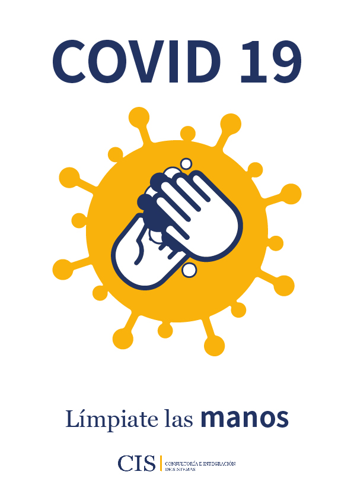
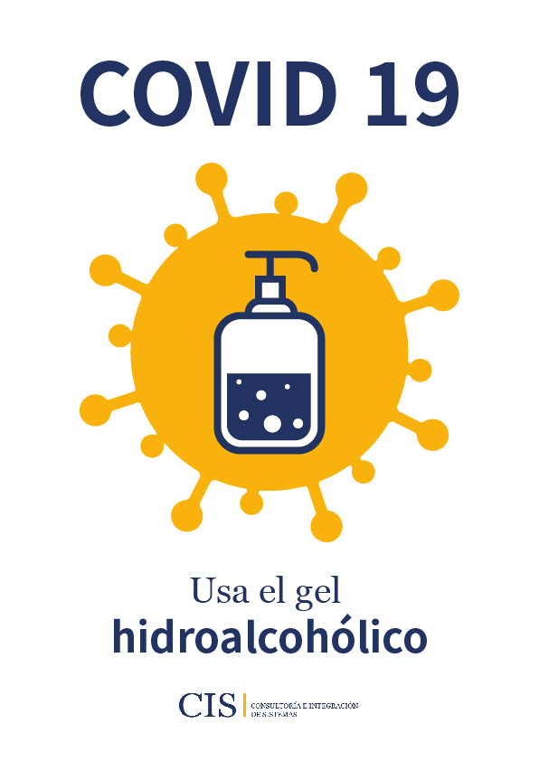
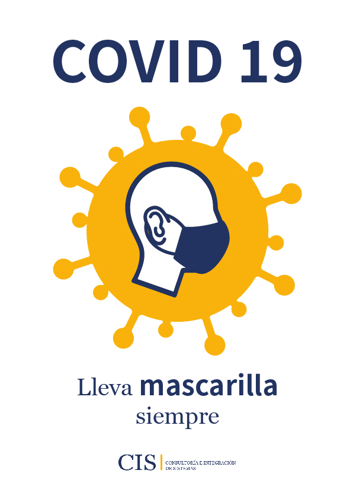
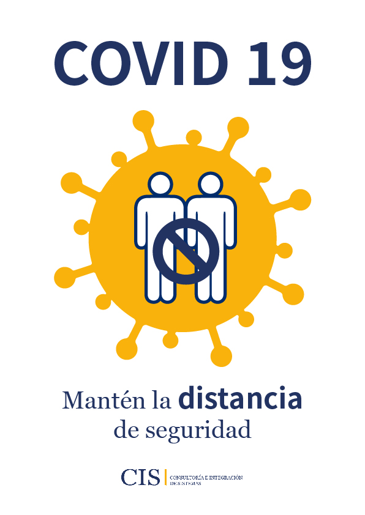
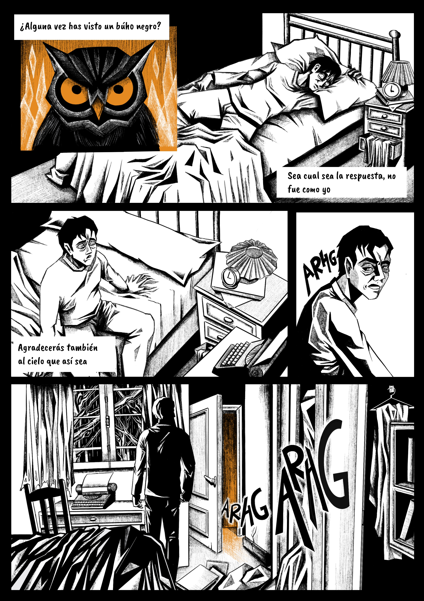

ABOUT ME
I am Noelia Sánchez, a graphic designer and illustrator with a university background in art. I enjoy turning ideas into visual stories that communicate clearly and creatively. My work blends technique and emotion, aiming to create unique designs with a strong identity.
GRAPHIC DESIGNER
These design projects were created during the COVID period. The goal was clear communication through simple visual language.





